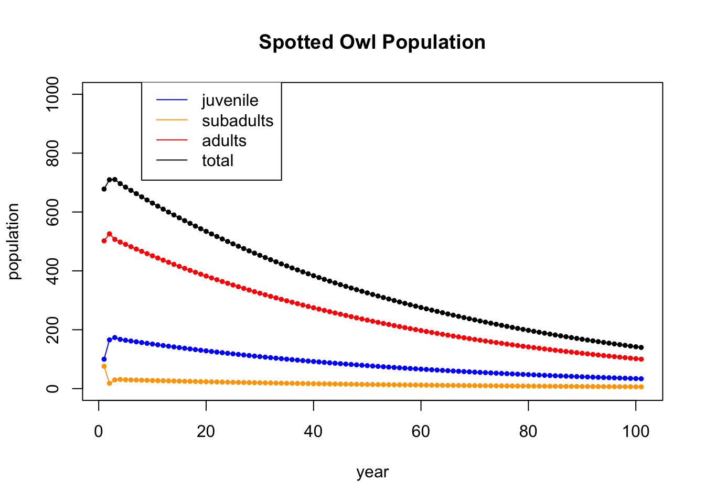
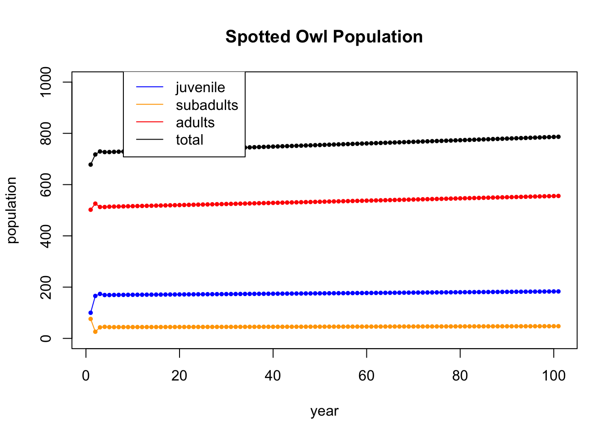

Section 15 Eigenvectors
15.1 Computing Eigenvectors and Eigenvalues
To compute eigenvalues and eigenvectors in R we use the eigen command. For example if our matrix is
(A = cbind(c(-14,-20,-23),c(13,19,19),c(-2,-2,1)))## [,1] [,2] [,3]
## [1,] -14 13 -2
## [2,] -20 19 -2
## [3,] -23 19 1Then we compute its eigenvalues and eigenvectors as
eigen(A)## eigen() decomposition
## $values
## [1] 6 3 -3
##
## $vectors
## [,1] [,2] [,3]
## [1,] -0.2672612 -0.4082483 0.5773503
## [2,] -0.5345225 -0.4082483 0.5773503
## [3,] -0.8017837 0.8164966 0.5773503One thing to notice about the eigenvectors is that they are scaled to have length one (they are unit vectors). So they often do not look like what we expect. Note for example that the first vector above is a multiple of \((1,2,3)^T\), the second is a multiple of \((-1,-1,2)^T\) and the third is a multiple of \((1,1,1)^T\).
We can extract the eigenvectors and eigenvalues as follows
vals = eigen(A)$values
vecs = eigen(A)$vectorsThen, for example, we can see if a vector is an eigenvector as follows. Here I will check the first eigenvalue and first eigenvector:
lambda1 = vals[1]
v1 = vecs[,1]
A %*% v1## [,1]
## [1,] -1.603567
## [2,] -3.207135
## [3,] -4.810702lambda1 * v1## [1] -1.603567 -3.207135 -4.810702From this, we see that \(A v_1 = \lambda_1 v_1\).
Recall that every scalar multiple of an eigenvector is also an eigenvector of that same eigenvalue. The vectors are currently scaled to have length 1. Another useful scaling is to have them sum to 1. You can accomplish this by dividing them by the sum of their entries. For example,
v1 = v1/sum(v1)
v1## [1] 0.1666667 0.3333333 0.500000015.2 Diagonalization
In class we diagonalized a few matrices. Here we show how to do this in R.
- Here is the first matrix from the checkpoint question CP-5.3.
(A = cbind(c(-5,-6,-7),c(6,7,8),c(-2,-2,-2)))## [,1] [,2] [,3]
## [1,] -5 6 -2
## [2,] -6 7 -2
## [3,] -7 8 -2vals = eigen(A)$values
vals## [1] 1.000000e+00 -1.000000e+00 -3.766534e-15vecs = eigen(A)$vectors
vecs## [,1] [,2] [,3]
## [1,] -0.2672612 0.5773503 -0.6666667
## [2,] -0.5345225 0.5773503 -0.6666667
## [3,] -0.8017837 0.5773503 -0.3333333solve(vecs) %*% A %*% vecs## [,1] [,2] [,3]
## [1,] 1.000000e+00 3.355686e-15 -6.554309e-16
## [2,] 6.661338e-15 -1.000000e+00 8.881784e-15
## [3,] 4.272762e-15 -3.076740e-15 1.776357e-15Here, we are diagonalizing \(A\) by multiplying \(P^{-1} A P = D\) where \(P\) is the matrix of eigenvectors and \(D\) is the diagonal matrix of eigenvalues.
We can use zapsmall to round or “zap†very small numbers to 0, and it then looks more like what we are expecting.
zapsmall(solve(vecs) %*% A %*% vecs)## [,1] [,2] [,3]
## [1,] 1 0 0
## [2,] 0 -1 0
## [3,] 0 0 0- Now we diagonalize the second matrix from CP-5.3 You will recall that this one has a repeated eigenvalue (algebraic multiplicity 2), but it has a 2-dimensional eigenspace (geometric multiplicity 2), so it is digonalizable.
B = cbind(c(3,-1,2),c(-1,3,2),c(2,2,0))
eigen(B)## eigen() decomposition
## $values
## [1] 4 4 -2
##
## $vectors
## [,1] [,2] [,3]
## [1,] 0.9128709 0.0000000 -0.4082483
## [2,] -0.1825742 0.8944272 -0.4082483
## [3,] 0.3651484 0.4472136 0.8164966vals = eigen(B)$values
vecs = eigen(B)$vectors
zapsmall(solve(vecs) %*% B %*% vecs)## [,1] [,2] [,3]
## [1,] 4 0 0
## [2,] 0 4 0
## [3,] 0 0 -2- The third matrix from CP-5.3 is not diagonalizable. It has an eigenvalue of algebraic multiplicity 2 and geometric multiplicity 1. Note that it gives the same two eigenvectors for \(v_2\) and \(v_3\), because the eigenspace \(E_2\) is only 1 dimensional.
C = cbind(c(3,-1,1),c(2,2,1),c(1,1,2))
eigen(C)## eigen() decomposition
## $values
## [1] 3 2 2
##
## $vectors
## [,1] [,2] [,3]
## [1,] 0.8017837 0.5773503 0.5773503
## [2,] -0.2672612 -0.5773503 -0.5773503
## [3,] 0.5345225 0.5773503 0.577350315.3 Dynamical Systems
Let \(A\) be a square \(n \times n\) matrix and let \(\mathsf{x}_0 \in \mathbb{R}^n\). A dynamical system is a sequence of vectors \(\mathsf{x}_0,\mathsf{x}_1,\mathsf{x}_2, \ldots, \mathsf{x}_t, \ldots\) where \[ \mathsf{x}_{t} = A \mathsf{x}_{t-1} = A^t \mathsf{x}_0 \quad \mbox{for} \quad t \geq 1. \] The sequence \(\mathsf{x}_0,\mathsf{x}_1,\mathsf{x}_2, \ldots, \mathsf{x}_t, \ldots\) is called the trajectory for initial vector \(\mathsf{x}_0\).
15.3.1 Plotting dynamical systems
Here use some special code, written by Professor Beveridge, that makes helpful plots.
get_traj <- function(mat, x0, num) {
traj = cbind(x0)
num
for (i in 1:num) {
traj = cbind(traj, mat %*% traj[,dim(traj)[2]])
traj
}
return(traj)
}
plot_traj <- function(mat, x0, num) {
traj = get_traj(mat,x0,num)
points(traj[1,],traj[2,], pch=20, col=rainbow(length(traj)))
}
trajectory_plot <- function(mat, t=20, datamax=5, plotmax=10, numpoints=10, showEigenspaces=TRUE) {
# initialize plot
par(pty = "s")
plot(c(0),c(0),type="n",
xlim=c(-plotmax,plotmax),ylim=c(-plotmax,plotmax),
xlab='x', ylab='y')
abline(h=-plotmax:plotmax, v=-plotmax:plotmax, col="gray")
mygrid <- expand.grid(x=seq(from = -datamax, by = 2*datamax/numpoints, l = numpoints+1),
y=seq(from = -datamax, by = 2*datamax/numpoints, l = numpoints+1))
for (i in 1:dim(mygrid)[1]) {
plot_traj(mat,c(mygrid[i,1],mygrid[i,2]),t)
}
if (showEigenspaces) {
eigen = eigen(mat)
v1 = zapsmall(eigen$vectors[,1])
v2 = zapsmall(eigen$vectors[,2])
if (! class(v1[1]) == "complex") {
if (v1[1] == 0) {abline(v=0)} else {
abline(a=0,b=v1[2]/v1[1], col="blue")}
if (v2[1] == 0) {abline(v=0)}
else {abline(a=0,b=v2[2]/v2[1], col="blue")
}
}
}
}The code will plot multiple trajectories at once. You specify:
- the matrix A
- the number of iterations
- the size of the square where the initial points lie
- the size of the plot
- the number of points along the side of the grid
15.3.2 Video Example
Let’s start by looking at the example from the video for November 3: \[ A = \frac{1}{30} \begin{bmatrix} 31 & 4 \\ 2 & 29 \end{bmatrix}. \]
A = 1/30 * cbind(c(31,2),c(4,29)) # the population dynamics matrix
x0 = c(5,-2) # the inital value
N = 8 # iterate N=10 times
X = matrix(0,nrow=nrow(A),ncol=N+1) # initialize an all 0 matrix to store values in
X[,1] = x0 # the first column is the initial population
for (i in 2:(N+1)) { # loopn from 2 to N+1
X[,i] = A %*% X[,i-1] # Apply A to column i-1 and put the value in column i
}
X # display the table## [,1] [,2] [,3] [,4] [,5] [,6] [,7] [,8] [,9]
## [1,] 5 4.9 4.85 4.849 4.8965 4.99249 5.137445 5.3323249 5.5785792
## [2,] -2 -1.6 -1.22 -0.856 -0.5042 -0.16096 0.177238 0.5138264 0.8521872A = 1/30 * cbind(c(31,2),c(4,29))
trajectory_plot(A, t=30, datamax=5, plotmax=15, numpoints=5)Compare this with the eigenvalues and eigenvectors.
eigen(A)## eigen() decomposition
## $values
## [1] 1.1 0.9
##
## $vectors
## [,1] [,2]
## [1,] 0.8944272 -0.7071068
## [2,] 0.4472136 0.7071068We can see that we have slight expansion along \([ 2, 1]^{\top}\) and slight contraction along \([-1,1]\). The long term behavior is an expansion in the direction of \([2, 1]^{\top}\).
15.3.3 CheckPoint Question for today
Here is the checkpoint question for today (for which you found a closed-form solution).
A = 1/110 * cbind(c(97,-8),c(6,123)) # the population dynamics matrix
x0 = c(1,15) # the inital value
N = 8 # iterate N=10 times
X = matrix(0,nrow=nrow(A),ncol=N+1) # initialize an all 0 matrix to store values in
X[,1] = x0 # the first column is the initial population
for (i in 2:(N+1)) { # loop from 2 to N+1
X[,i] = A %*% X[,i-1] # Apply A to column i-1 and put the value in column i
}
X # display the table## [,1] [,2] [,3] [,4] [,5] [,6] [,7] [,8] [,9]
## [1,] 1 1.7 2.41 3.137 3.8881 4.67057 5.491921 6.359978 7.282954
## [2,] 15 16.7 18.55 20.567 22.7695 25.17767 27.813535 30.701177 33.866954Here is the eigeninformation:
eigen(A)## eigen() decomposition
## $values
## [1] 1.1 0.9
##
## $vectors
## [,1] [,2]
## [1,] -0.2425356 -0.9486833
## [2,] -0.9701425 -0.3162278And here is the corresponding plot of the dynamical system:
A = 1/110 * cbind(c(97,-8),c(6,123))
trajectory_plot(A, t=10, datamax=15, plotmax=25, numpoints=5)15.3.4 Discussion Question 1
In class, we looked at a matrix with eigenvalues 1 and 1/2, and we plotted a trajectory starting at \((8,7)\) by hand. Its eigensystem is shown here:
A = rbind(c(0.4, 0.4), c(-0.15, 1.1))
eigen(A)## eigen() decomposition
## $values
## [1] 1.0 0.5
##
## $vectors
## [,1] [,2]
## [1,] -0.5547002 -0.9701425
## [2,] -0.8320503 -0.2425356And here is a trajectory plot
trajectory_plot(A, t=30, datamax=10, plotmax=15, numpoints=5)15.3.5 Discussion Question 2
Here the matrix has the same eigenvectors, but now the eigenvalues are 1.0 and 0.9. It’s a little easier to see when the smaller eigenvalue converges more slowly.
A = rbind(c(0.88, 0.08), c(-0.03, 1.02))
eigen(A)## eigen() decomposition
## $values
## [1] 1.0 0.9
##
## $vectors
## [,1] [,2]
## [1,] -0.5547002 -0.9701425
## [2,] -0.8320503 -0.2425356trajectory_plot(A, t=30, datamax=10, plotmax=15, numpoints=5)15.3.6 Discussion Question 3
Here the matrix has the same eigenvectors, but now the eigenvalues are 1.1 and 0.9.
A = rbind(c(0.86, 0.16), c(-0.06, 1.14))
eigen(A)## eigen() decomposition
## $values
## [1] 1.1 0.9
##
## $vectors
## [,1] [,2]
## [1,] -0.5547002 -0.9701425
## [2,] -0.8320503 -0.2425356trajectory_plot(A, t=30, datamax=10, plotmax=15, numpoints=5)
15.3.7 Discussion Question 4
Finally, here again the matrix has the same eigenvectors, but now the eigenvalues are 0.99 and 0.9.
A = rbind(c(0.882, 0.072), c(-0.027, 1.008))
eigen(A)## eigen() decomposition
## $values
## [1] 0.99 0.90
##
## $vectors
## [,1] [,2]
## [1,] -0.5547002 -0.9701425
## [2,] -0.8320503 -0.2425356trajectory_plot(A, t=50, datamax=10, plotmax=15, numpoints=5)15.4 Northern Spotted Owl
This is the opening example in Chapter 5 of the textbook on page 265. It comes from a 1992 study of the northern spotted owl, which was threatened with extinction due to the loss of forest habitat due to logging in the Pacific Northwest. This is currently a story featured in an NPR Podcast called Timber Wars.
15.4.1 The Dynamical System
The vector \[ x_n = \begin{bmatrix} j_n \\ s_n \\ a_n \end{bmatrix} \] is an age-stage vector in which \(j_n, s_n\), and \(a_n\) are the number of female owls in the juvenile (up to 1 year), subadult (1-2 year), and adult (over 2 year) age groups in year \(n\).
The dynamics that take us from one year to the next is given by, the recursive relation \(x_{n+1} = A x+n\), where \(A\) is the matrix shown here. This is an age-stage matrix model that was published in Conservation Biology. \[ \begin{bmatrix} j_{n+1} \\ s_{n+1} \\ a_{n+1} \end{bmatrix} = \begin{bmatrix} 0 & 0 & 0.33 \\ 0.18 & 0 & 0 \\ 0 & 0.71 & 0.94 \end{bmatrix} \begin{bmatrix} j_n \\ s_n \\ a_n \end{bmatrix} \] If we multiply this system out, we get \[ \begin{array} {rcl} j_{n+1} &=& 0.33 a_n \\ s_{n+1} &=& 0.18 j_n \\ a_{n+1} &=& 0.71 s_n + 0.94 a_n \end{array} \] We see that, in this model, 0.33 represents the fertility or fecundity rate. That is, it is the proportion of new juveniles next year to adults this year (the proportion of offspring the adult population is producing). The 0.18 is the survival rate from juvenile to subadult, 0.71 is the survival rate from subadult to adult, and 0.94 proportion of adults that survive from one year to the next.
To see the dynamics play out over time, we will start with an original population of owls is distributed into age groups as follows. \[ x_0 = \begin{bmatrix} 100 \\ 76 \\ 502 \end{bmatrix} \] We will write a loop to apply the matrix \(A\) over and over again. This time we will make a table and store each value in the table.
A = cbind(c(0,0.18,0),c(0,0,.71),c(0.33,0,0.94)) # the population dynamics matrix
x0 = c(100,76,502) # the inital value
N = 10 # iterate N=10 times
X = matrix(0,nrow=nrow(A),ncol=N+1) # initialize an all 0 matrix to store values in
X[,1] = x0 # the first column is the initial population
for (i in 2:(N+1)) { # loopn from 2 to N+1
X[,i] = A %*% X[,i-1] # Apply A to column i-1 and put the value in column i
}
X # display the table## [,1] [,2] [,3] [,4] [,5] [,6] [,7] [,8] [,9]
## [1,] 100 165.66 173.5272 167.3330 164.27953 161.74110 159.0937 156.47643 153.90912
## [2,] 76 18.00 29.8188 31.2349 30.11993 29.57032 29.1134 28.63687 28.16576
## [3,] 502 525.84 507.0696 497.8168 490.12454 482.10222 474.1710 466.39127 458.73997
## [,10] [,11]
## [1,] 151.38419 148.90038
## [2,] 27.70364 27.24915
## [3,] 451.21326 443.81005Having saved the information, we can now plot the data, Note that it appears to support the claim the claim that the owls are threatened with extinction.
tot = X[1,] + X[2,] + X[3,]
t = seq(1,N+1)
plot(t,X[1,],type='l',col='blue',ylim=c(0,1000),ylab="population",xlab="year",main="Spotted Owl Population")
points(t,X[1,],col='blue',pch=20,cex=.8)
lines(t,X[2,],col='orange')
points(t,X[2,],col='orange',pch=20,cex=.8)
lines(t,X[3,],col='red')
points(t,X[3,],col='red',pch=20,cex=.8)
points(t,tot,col='black',pch=20,cex=.8)
lines(t,tot,col='black')
legend(8, 1050, legend=c("juvenile", "subadults", "adults","total"), col=c('blue','orange','red','black'), lty=1)Let’s run the iteration further. This time, we won’t display the table (gets too big), and we will just show the plot of 100 iterations
A = cbind(c(0,0.18,0),c(0,0,.71),c(0.33,0,0.94)) # the population dynamics matrix
x0 = c(100,76,502) # the inital value
N = 100 # iterate N times
X = matrix(0,nrow=nrow(A),ncol=N+1) # initialize an all 0 matrix to store values in
X[,1] = x0 # the first column is the initial population
for (i in 2:(N+1)) { # loopn from 2 to N+1
X[,i] = A %*% X[,i-1] # Apply A to column i-1 and put the value in column i
}
tot = X[1,] + X[2,] + X[3,]
t = seq(1,N+1)
plot(t,X[1,],type='l',col='blue',ylim=c(0,1000),ylab="population",xlab="year",main="Spotted Owl Population")
points(t,X[1,],col='blue',pch=20,cex=.8)
lines(t,X[2,],col='orange')
points(t,X[2,],col='orange',pch=20,cex=.8)
lines(t,X[3,],col='red')
points(t,X[3,],col='red',pch=20,cex=.8)
points(t,tot,col='black',pch=20,cex=.8)
lines(t,tot,col='black')
legend(8, 1050, legend=c("juvenile", "subadults", "adults","total"), col=c('blue','orange','red','black'), lty=1)
They do seem to be dying out.
15.4.2 Eigenanalysis
Now we check the eigenvectors and eigenvalues to see if they help us understand what is going on.
eigen(A)## eigen() decomposition
## $values
## [1] 0.9835927+0.0000000i -0.0217964+0.2059185i -0.0217964-0.2059185i
##
## $vectors
## [,1] [,2] [,3]
## [1,] 0.31754239+0i 0.6820937+0.0000000i 0.6820937+0.0000000i
## [2,] 0.05811107+0i -0.0624124-0.5896338i -0.0624124+0.5896338i
## [3,] 0.94646180+0i -0.0450520+0.4256233i -0.0450520-0.4256233ivals = eigen(A)$values
vals## [1] 0.9835927+0.0000000i -0.0217964+0.2059185i -0.0217964-0.2059185iMod(vals)## [1] 0.9835927 0.2070688 0.2070688The first eigenvalue is \(\lambda_1 = 0.98\), and the other two are complex. R always lists the eigenvalues from largest to smallest, so in this case the largets eigenvalue is less than one. That means that in that direction, the population is dying off by 2% each year.
If we extract the corresponding eigenvector, and scale it to sum to 1, we get
v1 = eigen(A)$vectors[,1] # get the first eigenvector
v1 = Re(v1) # drop the imaginary part
v1/sum(v1) # scale it to sum to 1## [1] 0.24017754 0.04395311 0.71586935What this is telling us that as the population dies off, it does so in this eigenvector direction with 24.0% of the population being juveniles, 4.4% subadults, and 71.5% adults.
The owls were going extinct because of the logging in the Pacific Northwest. Suppose that we make the case that by stopping logging we will increase the survival rate from juvenile to subadult from 0.18 to 0.26 (by improving the habititat the juvinile owls have a better chance of surviving the first year). In this case, the eigenvalues and eigenvectors becomes:
A = cbind(c(0,0.26,0),c(0,0,.71),c(0.33,0,0.94))
eigen(A)## eigen() decomposition
## $values
## [1] 1.0008184+0.0000000i -0.0304092+0.2448335i -0.0304092-0.2448335i
##
## $vectors
## [,1] [,2] [,3]
## [1,] 0.3121152+0i -0.0754384+0.6073766i -0.0754384-0.6073766i
## [2,] 0.0810836+0i 0.6450012+0.0000000i 0.6450012+0.0000000i
## [3,] 0.9465778+0i -0.4436732-0.1119384i -0.4436732+0.1119384iNotice that the largest eigenvalue now becomes 1. And if we iterate, we see that the population does not die off (it even grows slightly). 
Finally, we go back to the original system, which is dying out, but start with a totally different age distribution. You can see the non-dominant eigevectors dying out quickly at the beginning and the dominant eigenvector, of eigenvalue 0.98, taking over.
A = cbind(c(0,0.18,0),c(0,0,.71),c(0.33,0,0.94)) # the population dynamics matrix
x0 = c(70,600,8) # the inital value
N = 20 # iterate N times
X = matrix(0,nrow=nrow(A),ncol=N+1) # initialize an all 0 matrix to store values in
X[,1] = x0 # the first column is the initial population
for (i in 2:(N+1)) { # loopn from 2 to N+1
X[,i] = A %*% X[,i-1] # Apply A to column i-1 and put the value in column i
}
tot = X[1,] + X[2,] + X[3,]t = seq(1,N+1)
plot(t,X[1,],type='l',col='blue',ylim=c(0,1000),ylab="population",xlab="year",main="Spotted Owl Population")
points(t,X[1,],col='blue',pch=20,cex=.8)
lines(t,X[2,],col='orange')
points(t,X[2,],col='orange',pch=20,cex=.8)
lines(t,X[3,],col='red')
points(t,X[3,],col='red',pch=20,cex=.8)
points(t,tot,col='black',pch=20,cex=.8)
lines(t,tot,col='black')
legend(8, 1050, legend=c("juvenile", "subadults", "adults","total"), col=c('blue','orange','red','black'), lty=1)
15.5 Fibonacci Numbers
In this example, we show how we can use eigenvectors and eigenvalues to find closed formulas for the Fibonacci numbers. The Fibonacci numbers are defined recursively by \(f_0 = 0\), \(f_1 = 1\) and \(f_{n+1} = f_n + f_{n-1}\) for \(n > 1\). Using this definition, we get the numbers \[ \begin{array}{c|ccccccccccccc} n & 0 & 1 & 2 & 3 & 4 & 5 & 6 & 7 & 8 & 9 & 10 & 11 & \cdots \\ \hline f_n & 0 & 1 & 1 & 2 & 3 & 5 & 8 & 13 & 21 & 34 & 55 & 89 & \cdots \end{array} \] To bring some linear algebra into the picture, consider the matrix \[ F = \begin{bmatrix} 0 & 1 \\ 1 & 1 \end{bmatrix}, \] and observe that it takes us from one pair of Fibonacci numbers to the next since it encodes the rule \(f_{n+1} = f_n + f_{n-1}\): \[ \begin{bmatrix} 0 & 1 \\ 1 & 1 \end{bmatrix} \begin{bmatrix} f_{n-1} \\ f_{n} \end{bmatrix} = \begin{bmatrix} f_n \\ f_{n-1} + f_n \end{bmatrix} = \begin{bmatrix} f_n \\ f_{n+1} \end{bmatrix} \] Thus, the matrix \(F\) generates the next Fibonacci numbers. If we start with \(\begin{bmatrix} 0 \\ 1 \end{bmatrix}\) and apply \(F\) over and over again, it will generate the Fibonacci numbers. You can see that here in R:
F = cbind(c(0,1),c(1,1)) # the population dynamics matrix
x0 = c(0,1) # the inital value
N = 11 # iterate N times
X = matrix(0,nrow=nrow(F),ncol=N+1) # initialize an all 0 matrix to store values in
X[,1] = x0 # the first column is x_1
for (i in 2:(N+1)) { # loopn from 2 to N+1
X[,i] = F %*% X[,i-1] # Apply A to column i-1 and put the value in column i
}
X ## [,1] [,2] [,3] [,4] [,5] [,6] [,7] [,8] [,9] [,10] [,11] [,12]
## [1,] 0 1 1 2 3 5 8 13 21 34 55 89
## [2,] 1 1 2 3 5 8 13 21 34 55 89 144We can use the eigenvectors and eigenvalues to find a closed formula for these numbers, just as we did for the owls and rats problem (and others).
Step 1 Find the eigenvalues of \(F\).
\[ \det\begin{bmatrix} - \lambda & 1 \\ 1 & 1 - \lambda \end{bmatrix} = (-\lambda)(1 - \lambda) - 1= \lambda^2 - \lambda - 1. \] Then we use the quadratic formula to find its roots: \[ \lambda = \frac{1 \pm \sqrt{1 + 4}}{2} = \frac{1 \pm \sqrt{5}}{2}. \] If we let \[ \phi = \frac{1 + \sqrt{5}}{2} \quad\hbox{and}\quad \overline{\phi} = \frac{1 - \sqrt{5}}{2}, \] then \(\phi\) is the golden ratio and \(\overline{\phi}\) is its conjugate.
Step 2 Find the eigenvectors. Because the eigenvalues are a bit complicated this becomes a little tricky. First we will notice some things about the golden ratio that help us out: \[ \phi + \overline{\phi} = \frac{1 + \sqrt{5}}{2} + \frac{1 - \sqrt{5}}{2} = 1, \qquad\hbox{so} \quad 1 - \phi = \overline{\phi}. \] \[ \phi - \overline{\phi} = \frac{1 + \sqrt{5}}{2} - \frac{1 - \sqrt{5}}{2} = \sqrt{5}, \qquad\hbox{so} \quad 1 - \phi = \overline{\phi}. \] \[ \phi \overline{\phi} = \frac{1 + \sqrt{5}}{2} \frac{1 - \sqrt{5}}{2} = \frac{1 - 5}{4} = -1. \] \[ \phi^2 - \phi - 1 = 0 \qquad\hbox{and}\qquad \overline{\phi}^2 - \overline{\phi} - 1 = 0 \] This last one comes from the fact that both \(\phi\) and \(\overline{\phi}\) are zeros of \(\lambda^2 - \lambda -1 = 0\).
Now we find the eigenvectors and use some of these properties to help us do the algebra: \[ \begin{bmatrix} - \phi & 1 \\ 1 & 1 - \phi \end{bmatrix} \rightarrow \begin{bmatrix} 1 & 1 - \phi \\ - \phi & 1 \end{bmatrix} \rightarrow \begin{bmatrix} 1 & 1 - \phi \\ 0 & \phi - \phi^2 + 1 \end{bmatrix} = \begin{bmatrix} 1 & \overline{\phi} \\ 0 & 0 \end{bmatrix} \quad\Rightarrow\quad v_1 = \begin{bmatrix} -\overline{\phi} \\ 1 \end{bmatrix}. \] \[ \begin{bmatrix} - \overline{\phi} & 1 \\ 1 & 1 - \overline{\phi} \end{bmatrix} \rightarrow \begin{bmatrix} 1 & 1 - \overline{\phi} \\ - \overline{\phi} & 1 \end{bmatrix} \rightarrow \begin{bmatrix} 1 & 1 - \overline{\phi} \\ 0 & \overline{\phi} - \overline{\phi}^2 + 1 \end{bmatrix} = \begin{bmatrix} 1 & \phi \\ 0 & 0 \end{bmatrix} \quad\Rightarrow\quad v_2 = \begin{bmatrix} -\phi \\ 1 \end{bmatrix}. \] If we rescale \(v_1\) by \(\phi\) and \(v_2\) by \(\overline{\phi}\) then we get some even nicer vectors: \[ w_1 = \phi \begin{bmatrix} -\overline{\phi} \\ 1 \end{bmatrix}= \begin{bmatrix} -\phi\overline{\phi} \\ \phi \end{bmatrix}= \begin{bmatrix} 1 \\ \phi \end{bmatrix}, \qquad w_2 = \overline{\phi} \begin{bmatrix} -\phi \\ 1 \end{bmatrix} = \begin{bmatrix} -\overline{\phi} \phi \\ \overline{\phi} \end{bmatrix} = \begin{bmatrix} 1 \\ \overline{\phi} \end{bmatrix} \]
Step 3 Express the initial vector in terms of the eigenvectors. You can augment and row reduce or use the inverse to find the coefficients. This uses the fact (from above) that \(\phi - \overline{\phi} = \sqrt{15}.\) \[ \begin{bmatrix} 0 \\ 1 \end{bmatrix} = \frac{1}{\sqrt{5}} \begin{bmatrix} 1 \\ \phi \end{bmatrix} -\frac{1}{\sqrt{5}} \begin{bmatrix} 1 \\ \overline{\phi} \end{bmatrix} \] Step 4 Apply \(F^n\), \[ \begin{bmatrix} f_{n} \\ f_{n+1} \end{bmatrix} = F^n \begin{bmatrix} 0 \\ 1 \end{bmatrix} = F^n \left(\frac{1}{\sqrt{5}} \begin{bmatrix} 1 \\ \phi \end{bmatrix} -\frac{1}{\sqrt{5}} \begin{bmatrix} 1 \\ \overline{\phi} \end{bmatrix}\right) = \frac{1}{\sqrt{5}} F^n \begin{bmatrix} 1 \\ \phi \end{bmatrix} -\frac{1}{\sqrt{5}} F^n \begin{bmatrix} 1 \\ \overline{\phi} \end{bmatrix} \\ = \frac{1}{\sqrt{5}} \phi^n \begin{bmatrix} 1 \\ \phi \end{bmatrix} -\frac{1}{\sqrt{5}} \overline{\phi}^n \begin{bmatrix} 1 \\ \overline{\phi} \end{bmatrix} \]
Step 5 Extract a formula for \(f_n\) from the first coordinate \[ f_n = \frac{1}{\sqrt{5}} \phi^n - \frac{1}{\sqrt{5}} \overline{\phi}^n. \] This is the very famous Binet’s Formula. The cool thing is that it comes from eigenvalues and eigenvectors. It’s all linear algebra!
Step 5 Try it. Let’s see if it works. Here is the golden ratio and its conjugate:
g = (1 + sqrt(5))/2
gb = (1 - sqrt(5))/2
c(g,gb)## [1] 1.618034 -0.618034Here is the 10th Fibonacci number using the formula:
n = 10
1/sqrt(5)*g^n - 1/sqrt(5)*gb^n## [1] 55And is the 58th Fibonacci number
n = 58
1/sqrt(5)*g^n - 1/sqrt(5)*gb^n## [1] 591286729879